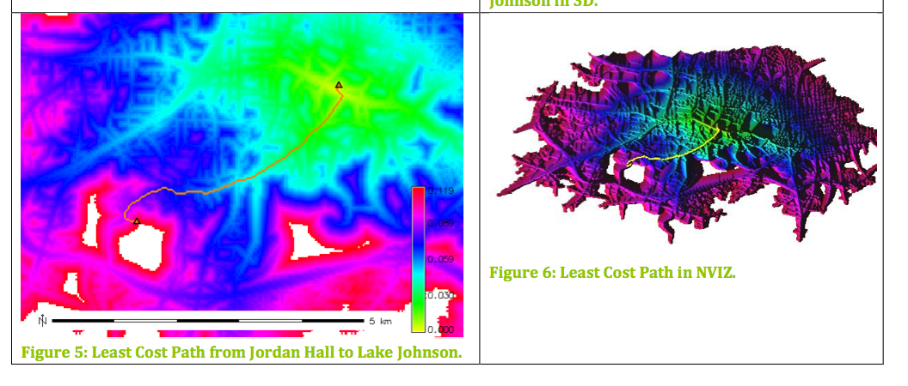
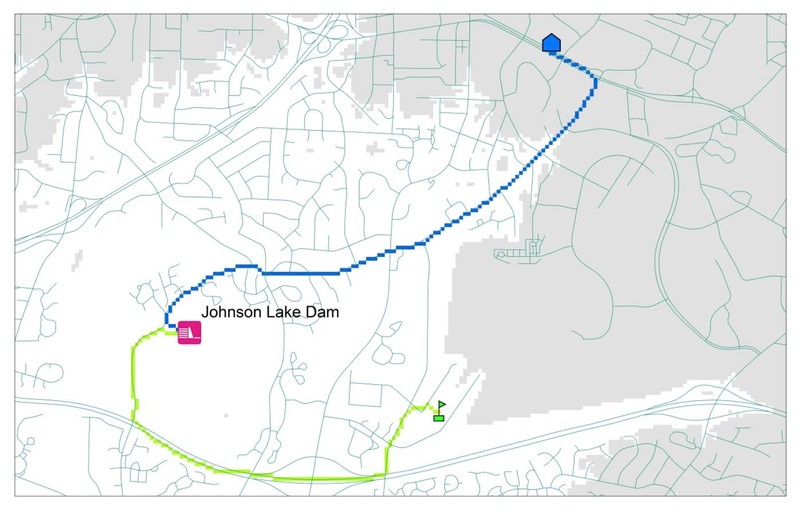
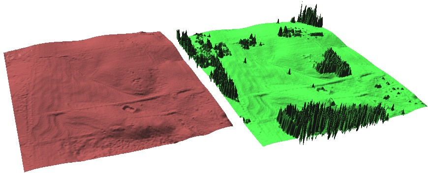
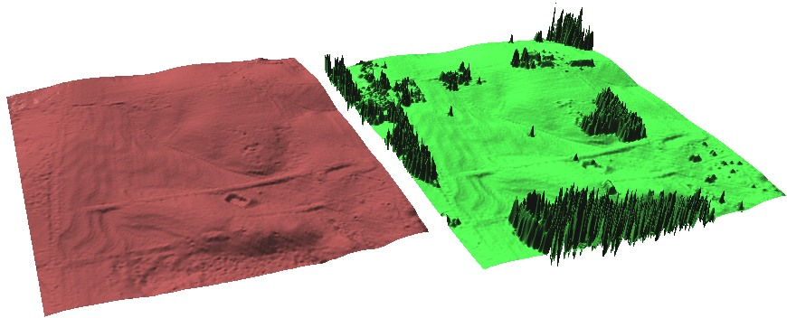
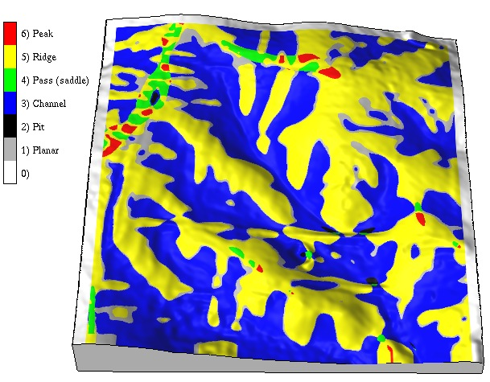
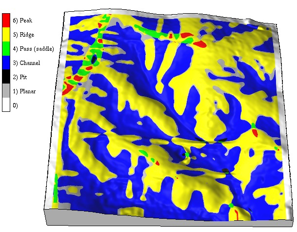

Geospatial Modeling
GIS/MEA582
Helena Mitasova
Center for Geospatial Analytics,
North Carolina State University

Helena Mitasova
Center for Geospatial Analytics,
North Carolina State University


Role of visualization

3D visualization is used in many assignments
Multiple surfaces based on lidar and cut-planes


Techniques for highly efficient solutions to geospatial problems
Basics concepts and tools:
Buffers, cost surfaces, least cost path


Solutions from midterm exam
Using the values measured at irregularly distributed points we compute the values at regular grid
 

Result of interpolation depends on the selection of parameters, in this example, the lower the tension, the smoother the surface

From lidar point cloud to DEM and DSM


Topographic parameters and landforms
 

Problems based on ray-tracing: line of sight, radiation
Dynamics of cast shadows and solar energy potential on June 22


Focused on student's research interests, any geospatial software can be used
but surface or continuous field component must be included


Anna Petrasova and Vaclav Petras
Six assignment papers with insightful 2D and 3D graphics that represent the course foundation topics
Independent project paper : some evolve into papers for conferences or scientific journals